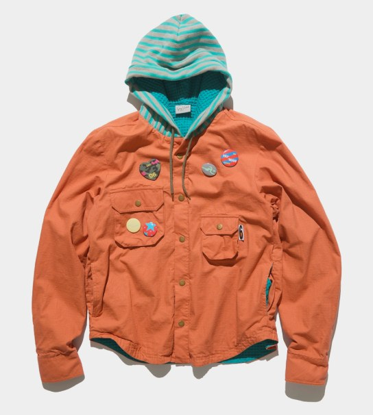
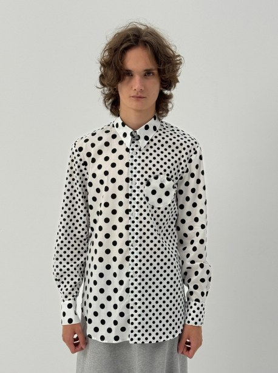
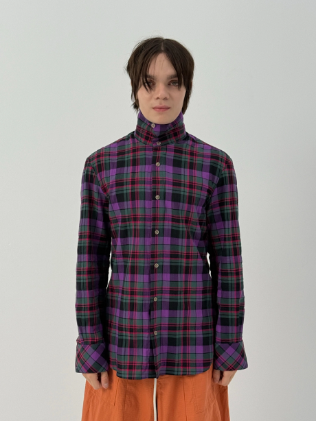
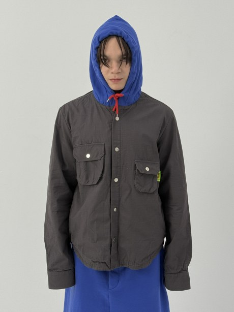
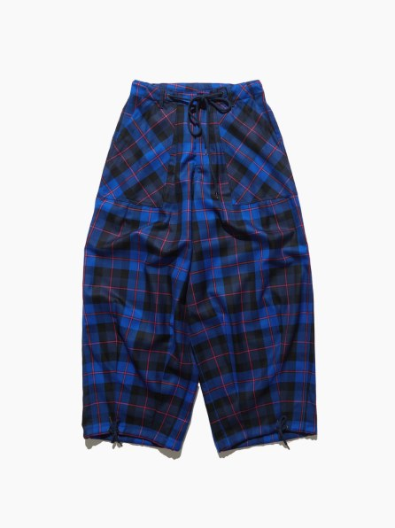
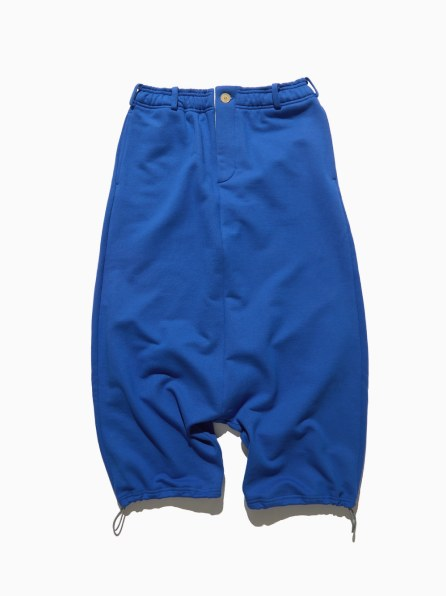
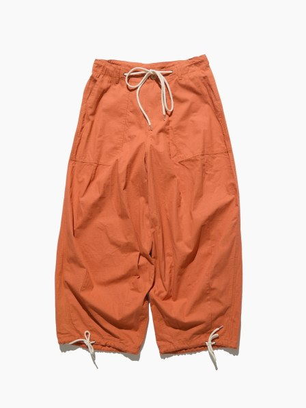
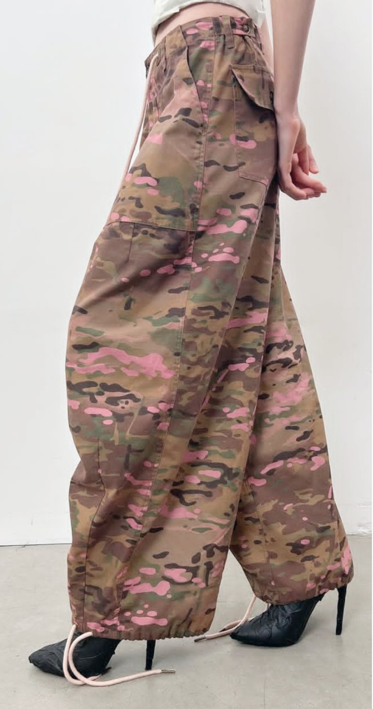
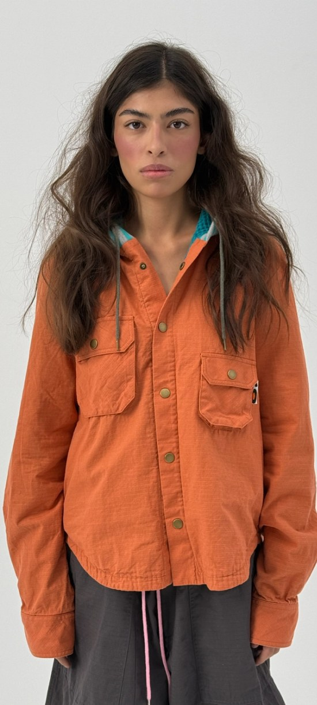

Работа с брендом Siniy Vsadnik строилась не как отдельный заказ, а как серия взаимосвязанных задач. За время сотрудничества было выпущено несколько коллекций — от Deserted Label до MOTTO — каждая со своей логикой, но внутри одного подхода. Здесь важно было не просто воспроизвести дизайн, а встроиться в процесс формирования вещей и предложить решения на уровне технологии и исполнения.
Основной акцент был на деталях и конструктиве. В рамках проекта разрабатывались нестандартные элементы, прорабатывались внутренние обработки, подбирались материалы, которые могли сохранить форму и характер изделия на тиражах. При этом каждая коллекция оставалась узнаваемой и цельной, несмотря на различие задач и сезонов.










В результате получилась не серия разрозненных выпусков, а последовательная работа, где каждое новое решение усиливает предыдущие. Такой формат требует не только производства, но и постоянного диалога — когда вещи не просто шьются, а уточняются в процессе.